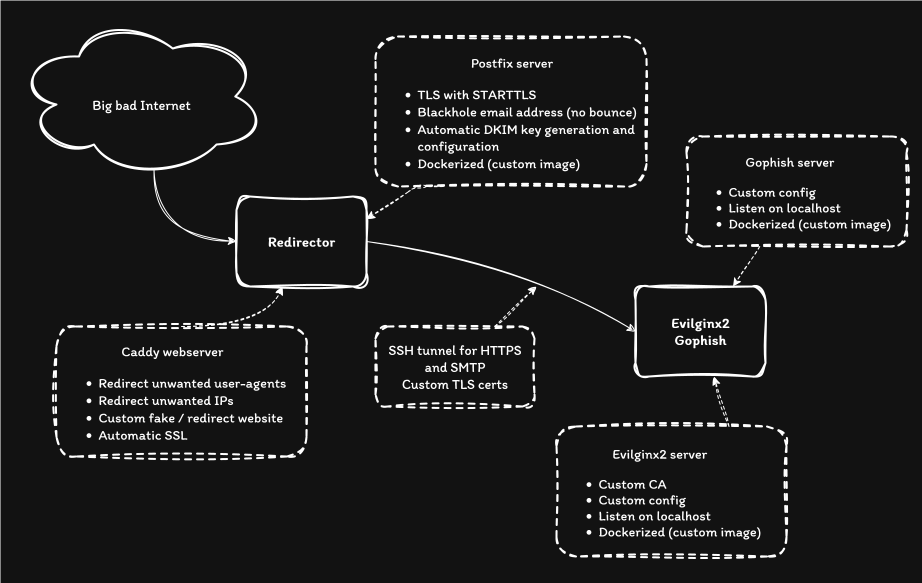
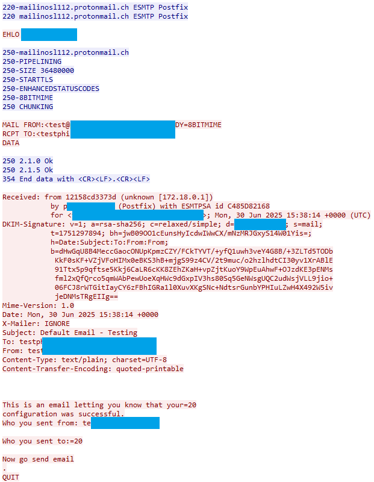
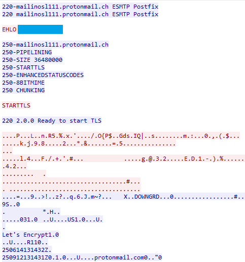

Building Phishing Infrastructure With Terraform and Ansible
- categories
- Infrastructure Phishing
- published
Building phishing or really any kind of pentest/red team infrastructure using Terraform and Ansible.
In this article, we’ll go over the architecture, Terraform setup and Ansible tasks that make it possible to build reliable and secure infrastructure.
This isn’t new, I remember reading Rasatmouse’s 2021 blog a while back about Terraform and Ansible https://rastamouse.me/infrastructure-as-code-terraform-ansible/, and Marcello’s blog https://byt3bl33d3r.substack.com/p/taking-the-pain-out-of-c2-infrastructure, or APTortellini’s blog https://aptw.tf/2021/11/25/c2-redirectors-using-caddy.html that both talked about Caddy as a reverse proxy for Red Team operations. I’ve also seen InfoSec folks discuss RedTeam infra on Twitter that sparked the idea of building such a thing on my own.
Thanks to all these people !
Table of Contents
- Architecture and Design
- Terraform and Ansible
- Evilginx2 configuration
- Redirector configuration
- Gophish configuration
- Postfix configuration
- Email and network email analysis
- Improvements
Architecture and Design
Here’s a diagram of the architecture.

We are using two separate servers for redirector and evilginx2, following the usual design for C2 infrastructure. This design prevents Evilginx2 from being exposed directly on the Internet, and gives us the option to replace the redirector in case the domain gets flagged without having to redeploy, reconfigure and retest the entire infrastructure.
We’ll see details on each segment later.
Terraform and Ansible
We’ll use Terraform and Ansible to deploy this design, DevOps teams can’t have all the fun.
I’ll skip the Terraform part because the setup will depend on the cloud provider you’ll use.
Ensure that you configure the instances with an SSH key that is readily available on the machine where you’ll be running Ansible.
The most important part is to setup DNS correctly, in my DigitalOcean config, this looks like this:
resource "digitalocean_domain" "domain" {
name = var.domain_name
}
resource "digitalocean_record" "wildcard" {
domain = digitalocean_domain.domain.id
type = "A"
name = "*"
ttl = 1800
value = digitalocean_droplet.evilginx["redirector"].ipv4_address
}
resource "digitalocean_record" "a" {
domain = digitalocean_domain.domain.id
type = "A"
name = "@"
ttl = 1800
value = digitalocean_droplet.evilginx["redirector"].ipv4_address
}
This will ensure that the domain and subdomains will point to our redirector IP. Notice that we don’t use the evilginx server IP or change the NS record.
For Ansible, we’ll discuss the directory structure here, and the details of the main tasks in the next chapters.
.
├── evilginx2.yml
├── hosts.yml
├── redirector.yml
├── site.yml
└── roles
├── common
│ ├── tasks
│ │ ├── main.yml
│ │ └── prerequisites.yml
│ └── vars
│ └── main.yml
├── evilginx
│ ├── files
│ │ ├── docker-compose.yml
│ │ └── evilginx2
│ │ └── config
│ │ └── config.j2
│ ├── tasks
│ │ ├── firewall.yml
│ │ ├── generate_certs.yml
│ │ ├── main.yml
│ │ ├── prerequisites.yml
│ │ └── setup_evilginx2.yml
│ └── vars
│ └── main.yml
└── redirector
├── files
│ ├── caddy
│ │ ├── caddy
│ │ ├── Caddyfile.j2
│ │ ├── caddy.service
│ │ └── filters
│ │ ├── bad_ips.caddy
│ │ ├── bad_ua.caddy
│ │ ├── headers_standard.caddy
│ │ └── tls.caddy
│ ├── tunnels
│ │ └── autossh_https_service.j2
│ └── template_website
│ └── template1
├── tasks
│ ├── firewall.yml
│ ├── main.yml
│ ├── setup_caddy.yml
│ ├── ssh_portfwd.yml
│ ├── start_caddy.yml
│ └── webserver.yml
└── vars
└── main.yml
This recommended directory setup from Ansible helps manage servers with different roles. In this case, the site.xml imports the host playbooks :
- import_playbook: evilginx2.yml
- import_playbook: redirector.yml
Each playbook contains the host on which role tasks can be executed.
- hosts: evilginx
roles:
- common
- evilginx
Here, we target evilginx hosts with the common and evilginx roles. In the tree command output above, we can see the common, evilginx and redirector roles.
Every role directory contains:
- files - for static or template files
- tasks - for ansible tasks
- vars - for role-specific variables
In the task directory, the main.yml file will be executed by Ansible automatically. We can split up tasks and use include_tasks in main.yml to import them.
- include_tasks: prerequisites.yml
- include_tasks: generate_certs.yml
- include_tasks: setup_evilginx2.yml
- include_tasks: firewall.yml
This structure also means that we can either configure all the servers using site.xml or each individual hosts with their respective playbooks.
ansible-playbook -u root -i hosts.yml site.yml
ansible-playbook -u root -i hosts.yml <evilginx2.yml or redirector.yml>
Finally, the hosts.yml file contains a list of IPs per role :
redirector:
hosts:
164.92.212.233:
evilginx:
hosts:
164.92.210.139:
Evilginx2 configuration
Custom CA
The diagram shows that we are using a custom CA for Evilginx. We do this to generate our own certs instead of letting Evilginx2 request them from LetsEncrypt, or use the -developer argument that will generate self-signed certs. While this argument seems to be the solution to generate self-signed certs, the ca.crt ca.key are only created when launching Evilginx, which is a problem when deploying our infrastructure as we won’t have access to these keys to configure our redirector to trust Evilginx2’s developer certs.
Instead, we can create our own CA, generate certs for the domain and subdomains (as a wildcard) and install them as @mrgretzky’s tweet explains https://x.com/mrgretzky/status/1763584080245887320?t=QXA0bqeBrNP4xn8RoA1jfw&s=31:
1. Put your certificate and private key in: ~/.evilginx/crt/sites/<anyname>/
2. Disable LetsEncrypt with: `config autocert off`
3. Profit! (wildcard certs supported)
# source: https://gist.github.com/klo2k/6506d161e9a096f74e4122f98665ce70
- name: Generate Certificate Authority (CA) self-signed certificate
block:
- name: Generate Root CA private key
openssl_privatekey:
path: "/root/certs/ca.key"
- name: Generate Root CA CSR
openssl_csr:
path: "/root/certs/ca.csr"
privatekey_path: "/root/certs/ca.key"
common_name: "{{openssl_csr_common_name}}"
organization_name: "{{openssl_csr_organization_name}}"
basic_constraints:
- CA:TRUE
basic_constraints_critical: yes
key_usage:
- keyCertSign
- digitalSignature
- cRLSign
key_usage_critical: yes
- name: Generate Root CA certificate
openssl_certificate:
path: "/root/certs/ca.crt"
privatekey_path: "/root/certs/ca.key"
csr_path: "/root/certs/ca.csr"
provider: selfsigned
- name: Generate domain key, CSR and self-signed certificate (using own CA)
block:
- name: Generate host/internal domain private key
openssl_privatekey:
path: "/root/certs/{{cert_common_name}}.key"
- name: Generate host/internal domain CSR
openssl_csr:
path: "/root/certs/{{cert_common_name}}.csr"
privatekey_path: "/root/certs/{{cert_common_name}}.key"
common_name: "{{cert_common_name}}"
subject_alt_name: "{{cert_subject_alt_name}}"
organization_name: "{{openssl_csr_organization_name}}"
- name: Generate host/internal domain certificate (with own self-signed CA)
openssl_certificate:
path: "/root/certs/{{cert_common_name}}.hostonly.crt"
csr_path: "/root/certs/{{cert_common_name}}.csr"
ownca_path: "/root/certs/ca.crt"
ownca_privatekey_path: "/root/certs/ca.key"
ownca_not_after: "{{ownca_not_after}}"
provider: ownca
- name: Generate host/internal domain certificate (with own self-signed CA) - with full chain of trust
ansible.builtin.shell: "cat /root/certs/{{cert_common_name}}.hostonly.crt /root/certs/ca.crt > /root/certs/{{cert_common_name}}.crt"
We use the vars directory in the evilginx role to store the variables for the certs:
cert_common_name: "{{ domain }}"
cert_subject_alt_name: "DNS:*.{{ domain }}"
ownca_not_after: "+397d"
openssl_csr_common_name: "My CA"
openssl_csr_organization_name: "My Organisation"
I’ll let you figure out the Ansible task to copy the certs to Evilginx’s directory.
Docker Compose
In order to easily make updates to the source code of Evilginx2, I have a CICD pipeline that automatically builds a docker image and pushes it to DigitalOcean’s registry. We can now, from Ansible, authenticate to the registry and pull the image.
Authenticating to the registry:
- name: Fetch docker creds
ansible.builtin.command:
cmd: >-
curl -s -H "Authorization: Bearer {{ lookup('env', 'DIGITALOCEAN_TOKEN') }}"
"https://api.digitalocean.com/v2/registry/docker-credentials?expiry_seconds=600"
delegate_to: localhost
register: docker_creds
- name: Upload Docker login file
ansible.builtin.copy:
content: "{{ docker_creds.stdout }}"
dest: /root/.docker/config.json
mode: '0600'
The docker compose file used to deploy the image:
services:
evilginx2:
container_name: my_evilginx2
image: registry.digitalocean.com/my-registry/my-evilginx2
restart: always
volumes:
- /opt/evilginx2/phishlets:/volume/phishlets
- /opt/evilginx2/redirectors:/volume/redirectors
- /opt/evilginx2/config:/root/.evilginx/
ports:
- "127.0.0.1:8443:8443"
command: ["sleep", "infinity"]
We mount the /opt/evilginx2/configdirectory to /root/.evilginx/upload our own configuration file from Ansible. Phishlets and redirectors directories are also mounted in case we need to use a phishlet that isn’t built into the image.
Redirect IOC
Just something I found when playing around with this reverse proxy setup.
Evilginx2 has the option to redirect blacklisted IPs to an unauth URL, protecting your links. Using curl to make a HTTP request from an IP that is blacklisted will return a 200 OK with this odd HTML body.
> GET / HTTP/1.1
> Host: academy.testing-domain.ch:8443
> User-Agent: curl/7.88.1
> Accept: */*
>
< HTTP/1.1 200 OK
< Cache-Control: no-cache, no-store
< Connection: close
< Content-Type: text/html
< Transfer-Encoding: chunked
<html><head><meta name='referrer' content='no-referrer'><script>top.location.href='https://www.youtube.com/watch?v=dQw4w9WgXcQ';</script></head><body></body></html>
Searching Google and Shodan for this HTML doesn’t return any interesting results, but GitHub search finds this :

We should change the code in http_proxy.go to return a 301 :

Now this looks like a normal 301 Moved Permanently :
> GET / HTTP/1.1
> Host: academy.testing-domain.ch:8443
> User-Agent: curl/7.88.1
> Accept: */*
>
< HTTP/1.1 301
< Cache-Control: no-cache, no-store
< Connection: close
< Content-Type: text/html
< Location: https://www.youtube.com/watch?v=dQw4w9WgXcQ
< Transfer-Encoding: chunked
Redirector configuration
Firstly, we’ll configure Caddy as our reverse proxy, here’s an example configuration that provides automatic SSL with wildcard support, IP and user-agent denylist and our reverse proxy.
*.{{ domain }}:443 {
import ./filters/tls.caddy
encode gzip
header {
import ./filters/headers_standard.caddy
}
handle {
@ip_denylist {
import ./filters/bad_ips.caddy
}
@ua_denylist {
import ./filters/bad_ua.caddy
}
route @ip_denylist {
file_server {
root /var/www/html/{{ domain }}
}
}
route @ua_denylist {
file_server {
root /var/www/html/{{ domain }}
}
}
handle {
reverse_proxy https://localhost:8000 {
header_up Host {http.request.hostport}
transport http {
tls_server_name {http.request.hostport} # for SNI
tls_trust_pool file /opt/caddy/ca.crt
}
}
}
}
}
{{ domain }}:443 {
import ./filters/tls.caddy
encode gzip
header {
import ./filters/headers_standard.caddy
}
file_server {
root /var/www/html/{{ domain }}
}
}
Reverse proxy
We need to add a few statements to the reverse_proxy option.
tls_server_name sets the server name used when verifying the certificate received in the TLS handshake. By default, this will use the upstream address’ host part.
You only need to override this if your upstream address does not match the certificate the upstream is likely to use. For example, if the upstream address is an IP address, then you would need to configure this to the hostname being served by the upstream server.
A request placeholder may be used, in which case a clone of the HTTP transport config will be used on every request, which may incur a performance penalty.*
If we don’t set the SNI with tls_server_name and send a request with curl https://academy.testing-domain.ch, Evilginx2 receives the request like so:
[dbg] Got connection
[dbg] SNI: localhost
[dbg] fn_IsActiveHostname: Hostname: localhost
[dbg] fn_IsActiveHostname: Hostname: [academy.testing-domain.ch]
[dbg] TLS hostname unsupported: localhost
With the tls_server_nameconfigured, the hostname is correctly determined by Evilginx2.
[dbg] Got connection
[dbg] SNI: academy.testing-domain.ch
[dbg] fn_IsActiveHostname: Hostname: academy.testing-domain.ch
[dbg] fn_IsActiveHostname: Hostname: [academy.testing-domain.ch]
[dbg] Fetching TLS certificate for academy.breakdev.org:443 ...
[dbg] isWhitelistIP: 127.0.0.1-example
The host is parsed using vhost.TLS(c) from the https://github.com/inconshreveable/go-vhost library.
tlsConn, err := vhost.TLS(c)
if err != nil {
log.Debug("TLS conn failed")
return
}
log.Debug("SNI: %s", tlsConn.Host())
hostname := tlsConn.Host()
if hostname == "" {
log.Debug("TLS hostname is empty")
return
}
if !p.cfg.IsActiveHostname(hostname) {
log.Debug("TLS hostname unsupported: %s", hostname)
return
}
Changing the code to attempt to extract the host header from the HTTP connection seems to return the raw SSL data. I didn’t spend much time looking into it.
Not a valid http connection!: malformed HTTP request "\x16\x03\x01\x05\xdc\x01\x00\x05\xd8\x03\x03FĘ\x02#\xab\0".
Some of you probably noticed the reverse_proxy https://localhost:8000, forwarding requests to localhost ? We are using SSH port forwarding to “smuggle” our HTTPS traffic through the Internet towards our Evilginx server. Nothing new here, you could do the same when tunneling C2 traffic.
We can use the excellent autossh tool to create our ssh tunnel, forwarding our local port 8000 to the remote port 8443. Some SSH options with -o are used here, as the documentation suggests.
[Unit]
Description=Forwarding localhost:8000 to remote localhost:8443
After=network-online.target
[Service]
Type=simple
User=root
Environment=PATH=/usr/local/sbin:/usr/local/bin:/usr/sbin:/usr/bin
ExecStart=autossh -M 0 -NC -o "ExitOnForwardFailure=yes" -o "ServerAliveInterval=10" -o "ServerAliveCountMax=3" -o "StrictHostKeyChecking=accept-new" -L 127.0.0.1:8000:127.0.0.1:8443 -i ~/.ssh/evilginx2-user evilginx2@{{ evilginx_ip }}
Restart=always
RestartSec=5
[Install]
WantedBy=multi-user.target
Here are the Ansible tasks to configure this port forward :
- name: Create evilginx2's ssh keys
openssh_keypair:
path: ~/.ssh/evilginx2-user
comment: "evilginx2-user"
type: ecdsa
size: 384
state: present
register: sshkeys
- name: Update evilginx host authorized_keys
delegate_to: "{{ groups['evilginx'][0] }}"
authorized_key:
state: present
user: evilginx2
key: "{{ sshkeys.public_key }}"
- name: Upload autossh "https" service
template:
src: ../files/tunnels/autossh_https_service.j2
dest: /etc/systemd/system/autossh_https.service
owner: root
group: root
mode: '0644'
- name: Start autossh "https" service
ansible.builtin.systemd_service:
name: autossh_https
state: restarted
enabled: true
Since this task will run from the redirector role, we need to use delegate_to to target the evilginx host for the Update evilginx host authorized_keys task.
trust_pool configures the source of certificate authorities (CA) providing certificates against which to validate client certificates.*
We also need to set the trust_pool as we generate our own custom certificates (in the Evilginx2 chapter) and need to tell Caddy to trust the certs it’s going to see when proxying requests.
Here’s part of the Ansible task that uploads the configuration file, and copies the CA cert generated on the evilginx host :
- name: Upload Caddyfile
template:
src: ../files/caddy/Caddyfile.j2
dest: /opt/caddy/Caddyfile
owner: caddy
group: caddy
mode: '0644'
- name: Copy CA cert from evilginx
delegate_to: "{{ groups['evilginx'][0] }}"
ansible.builtin.slurp:
src: "/root/certs/ca.crt"
register: ca_cert
- name: Push CA cert to redirector
ansible.builtin.copy:
content: "{{ ca_cert.content | b64decode }}"
dest: "/opt/caddy/{{ ca_cert.source | basename }}"
Fake website
We want to redirect unauthenticated, unwanted and overall bad IPs or user-agents that want our phishing engagements to fail to a fake website.
- name: Create webroot directory
ansible.builtin.file:
path: /var/www/html/{{ domain }}
state: directory
owner: caddy
group: caddy
mode: '0744'
- name: Archive the content of the template website
delegate_to: localhost
ansible.builtin.archive:
path: "{{ role_path }}/files/template_website/{{ website }}/*"
dest: "{{ role_path }}/files/template_website/{{ website }}.tar.gz"
- name: Unarchive template website onto remote host
ansible.builtin.unarchive:
src: "{{ role_path }}/files/template_website/{{ website }}.tar.gz"
dest: /var/www/html/{{ domain }}
owner: caddy
group: caddy
- name: Remove local website template archive
delegate_to: localhost
file:
path: "../files/template_website/{{ website }}.tar.gz"
state: absent
Archiving the entire directory before upload is necessary, otherwise it takes Ansible too long to copy all the files.
Gophish configuration
I’m going to make changes to the previous configuration for the Gophish and Postfix instances.
Docker Compose
We’ll have to modify the docker compose file from the Evilginx2 setup to include the Gophish container.
The network is hardcoded to be 172.18.0.0/16 with the name phishnetwork and the host file of both containers is configured to resolve host.docker.internal to 172.18.0.1. We’ll see why later.
services:
evilginx2:
container_name: my_evilginx2
image: registry.digitalocean.com/my-registry/my-evilginx2
restart: always
volumes:
- /opt/evilginx2/phishlets:/volume/phishlets
- /opt/evilginx2/redirectors:/volume/redirectors
- /opt/evilginx2/config:/root/.evilginx/
ports:
- "127.0.0.1:8443:8443"
networks:
- phishnetwork
extra_hosts:
- "host.docker.internal:172.18.0.1"
command: ["sleep", "infinity"]
gophish:
container_name: my_gophish
image: registry.digitalocean.com/my-registry/my-gophish
restart: always
ports:
- "127.0.0.1:8083:3333"
networks:
- phishnetwork
extra_hosts:
- "host.docker.internal:172.18.0.1"
networks:
phishnetwork:
driver: "bridge"
driver_opts:
com.docker.network.bridge.name: phishnetwork
ipam:
config:
- subnet: 172.18.0.0/16
gateway: 172.18.0.1
This network also allows us to use container names to resolve while inside the network, making evilginx communicate with gophish much easier to configure.
Next, we’ll setup another SMTP ssh tunnel like the HTTP one earlier that listens on localhost:25.
Now we need to tell iptables to allow the gophish container to talk to this forwarded port.
- name: Add DNAT rule for phishnetwork (docker -> localhost tunnel)
ansible.builtin.command: >
iptables -t nat -A PREROUTING -i phishnetwork -p tcp --dport 25 -j DNAT --to-destination 127.0.0.1:25
- name: Allowing traffic from phishnetwork to localhost
ansible.builtin.command: >
iptables -A INPUT -p tcp --dport 25 -i phishnetwork -j ACCEPT
Finally, have to tell the kernel to allow prerouting from an internal address 172.18.0.1 (the docker phishnetwork) towards localhost by setting net.ipv4.conf.phishnetwork.route_localnet=1. We can be fancy and add a conf file to the sysctl.d directory and reload the sysctl settings.
- name: Enable sysctl route_localnet for phishnetwork
copy:
dest: /etc/sysctl.d/enable_docker_to_localhost.conf
content: |
net.ipv4.conf.phishnetwork.route_localnet=1
owner: root
group: root
mode: '0644'
- name: Reload sysctl settings
command: sysctl --system
This network configuration allows the gophish docker container to talk to the localhost port that redirects traffic towards the postfix server listening on the redirector server.
Using gophish this way allows us to send phishing emails using it’s easy-to-use interface, and if we use the Gophish fork from kgretzky, we can even get statistics back from evilginx (email open, clicked link, submitted data).
The admin interface on Gopish is accessible by running a local port forward with ssh like so : ssh root@<ip> -L 8083:localhost:8083
Postfix configuration
Postfix will be configured to support client TLS (with STARTTLS), a catchall blackhole email address to prevent replies to our phishing emails from generating bounces that inform the user of the phishing attempt and finally generate DKIM keys and configure them automatically on DigitalOcean for an 10/10 mail score.
I’ve forked https://github.com/catatnight/docker-postfix to add these additional features and pushed the image to DockerHub. You can check out the modifications here.
- If
use_tlsis set to1, postfix will attempt a TLS connection when sending email - If
blackholeis set to1, a blackhole account that receives email for any user and discards it will be created.
services:
postfix:
container_name: postfix_latest
image: fudgedotdotdot/postfix
restart: always
environment:
- maildomain={{ domain }}
- smtp_user=user:password
- use_tls=1
- blackhole=1
ports:
- "0.0.0.0:25:25"
volumes:
- /opt/postfix/domainkeys:/etc/opendkim/domainkeys
These final Ansible tasks will generate DKIM keys, parse them and add them to DigitalOcean’s DNS.
- name: Generate DKIM keys
ansible.builtin.command: "opendkim-genkey -b 2048 -h rsa-sha256 -r --subdomains -s {{ dkim_selector }} -d {{ domain }}"
args:
chdir: /opt/postfix/domainkeys
- name: Ensure root only permissions on DKIM private key
ansible.builtin.file:
path: /opt/postfix/domainkeys/{{ dkim_selector }}.private
owner: root
group: root
mode: '0600'
- name: Read DKIM public key file
ansible.builtin.shell: >
perl -0777 -ne 'print "$1\n" if /\((.*?)\)/s' /opt/postfix/domainkeys/{{ dkim_selector }}.txt | perl -pe 's/["\s]+//g' | perl -pe 's/(h|s)=.*?;//g'
register: dkim_public
- name: Adding DKIM public key to DigitalOcean
ansible.builtin.uri:
url: "https://api.digitalocean.com/v2/domains/{{ domain }}/records"
method: POST
headers:
Authorization: "Bearer {{ lookup('env', 'DIGITALOCEAN_TOKEN') }}"
Content-Type: "application/json"
body_format: json
body:
type: TXT
name: "{{ dkim_selector }}._domainkey"
data: "{{ dkim_public.stdout }}"
ttl: 1800
weight: null
flags: null
tag: null
status_code: 201
Email and network analysis
To confirm that we correctly configured DKIM, we can send an email to mail-tester.com and get this encouraging message:
We can also see that the email headers confirm that our SPF, DMARC and DKIM records are fonctionnal.
Authentication-Results: mail.protonmail.ch; dkim=pass (Good 2048 bit rsa-sha256 signature) header.d=mydomain.com header.a=rsa-sha256
Authentication-Results: mail.protonmail.ch; dmarc=pass (p=none dis=none) header.from=mydomain.com
Authentication-Results: mail.protonmail.ch; spf=pass smtp.mailfrom=mydomain.com
For the TLS configuration, running a network capture shows the difference between cleartext and encrypted email :
| TLS | Non-TLS |
|
 |
 |
Improvements
The main limitation of this setup is the lack of a fully-fledged mail server. We only have a MTA (Postfix) and no way of connecting a mail client to it. For this we would need a MDA (Mail Delivery Agent) like Dovecot.
The docker-mailserver here https://github.com/docker-mailserver/docker-mailserver is a all-in-one dockerized mail server. This project should remplace our simple postfix to allow for more involved phishing campaigns, like answering emails from users or sending emails manually first and then including a phishing link in the conversation later on.
Thanks for reading,
Fudge…